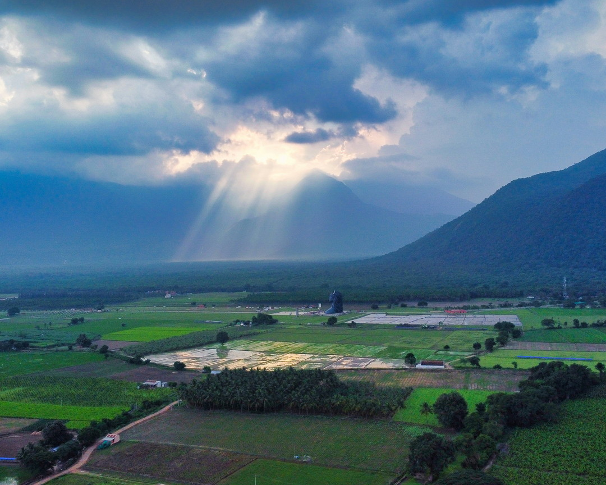

Accelerator Workshop · India 2026
The schedule
Week 1, 19 to 23 Oct: feedstocks, carbon to nitrogen ratios, recipes, building, hydrating, turning
Weekend: optional compost monitoring, then rest at the Isha Yoga Center
Week 2, 26 to 30 Oct: extracts, teas, nematode extractions, protozoan infusions, field application
In collaboration with Isha Outreach
Photograph: Cymatics / Unsplash